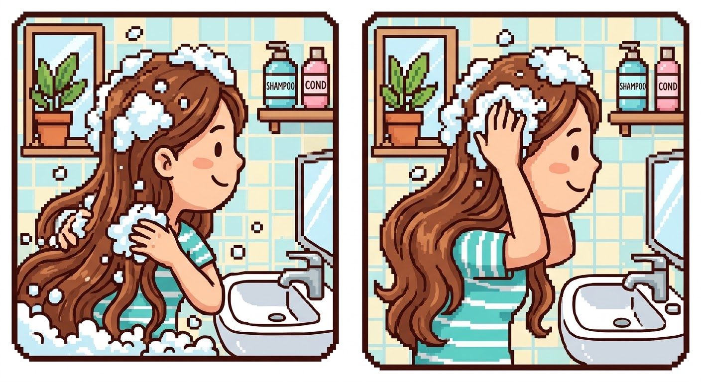

Meu primeiro post
Por: Vitória Santos de Melo
Boas-vindas ao meu novo blog! Aqui vou compartilhar dicas de programação e curiosidades da área de tecnologia.
Vou compartilhar conhecimentos sobre tecnologia e programação
Por: Vitória Santos de Melo
Boas-vindas ao meu novo blog! Aqui vou compartilhar dicas de programação e curiosidades da área de tecnologia.

Por: Vitória Santos de Melo
manter uma rotina de higiene, hidratação e proteção ajuda a deixar o cabelo mais saudável, forte e bonito.
Por: Vitória Santos de Melo
É feito antes de lavar e ajuda a proteger o comprimento e as pontas do ressecamento causado pelo shampoo. Pode ser um óleo vegetal ou um produto específico para pré-shampoo. Aplique principalmente no comprimento e nas pontas. Deixe agir pelo tempo indicado no produto e depois lave normalmente. É especialmente útil para cabelos secos, porosos ou com pontas ressecadas.